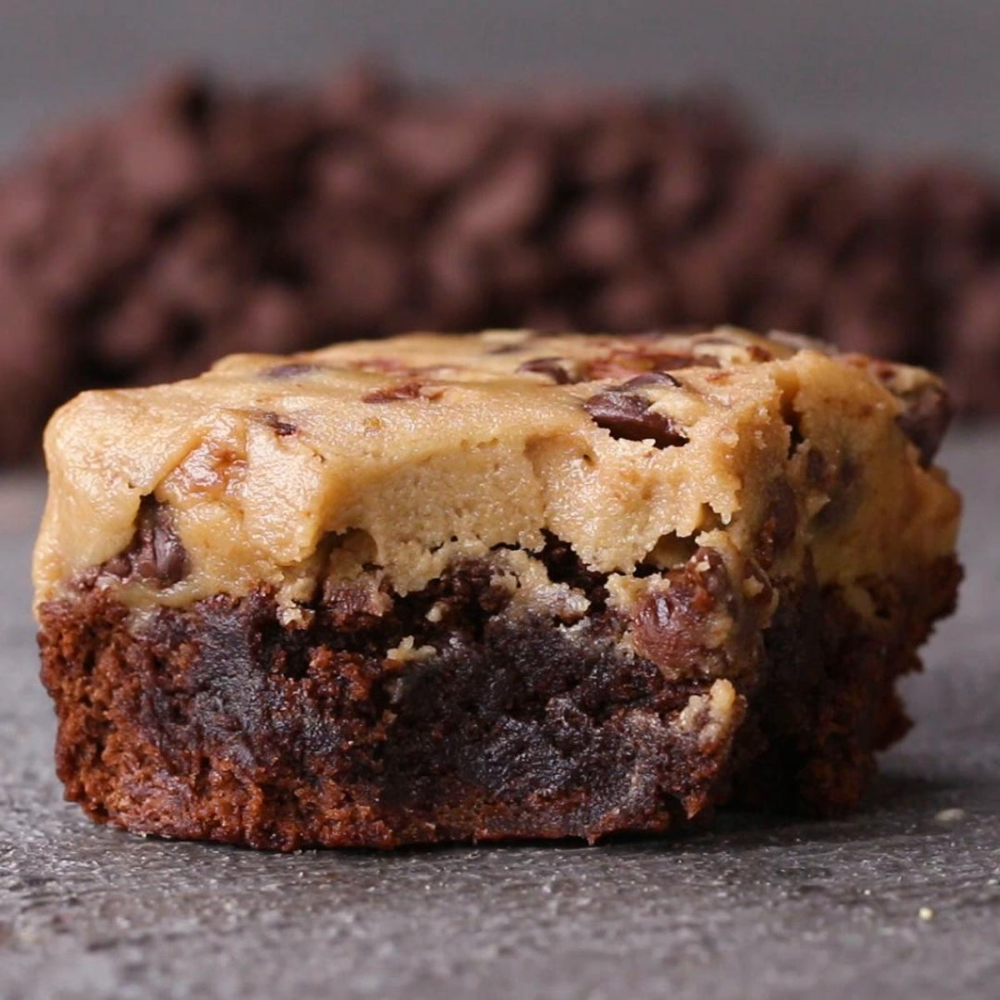
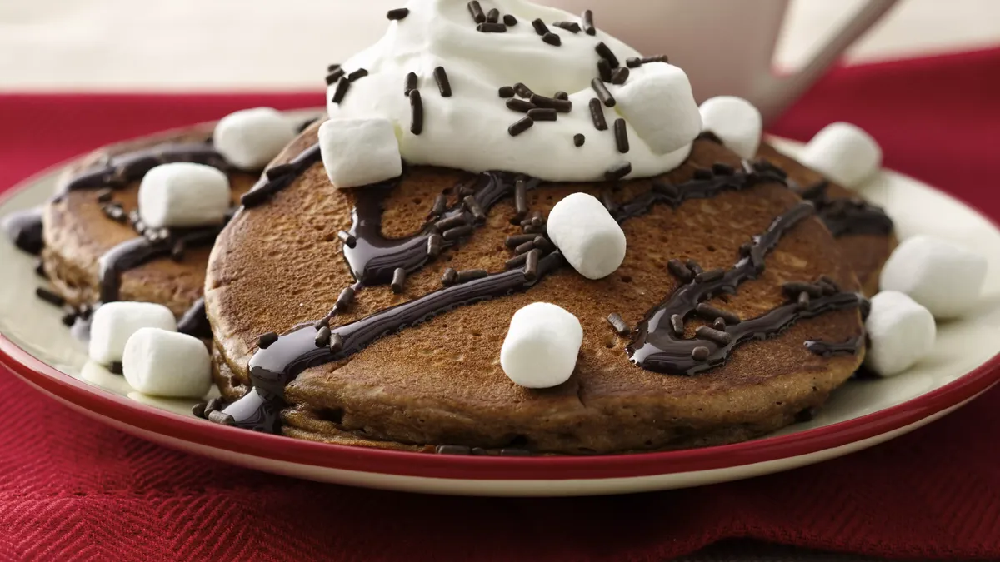
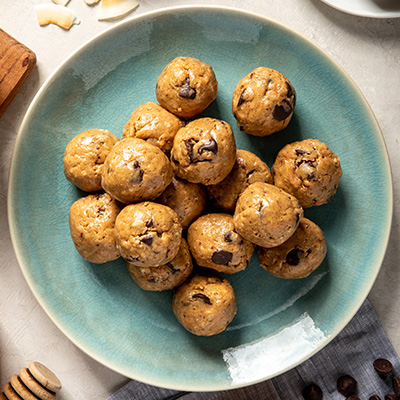
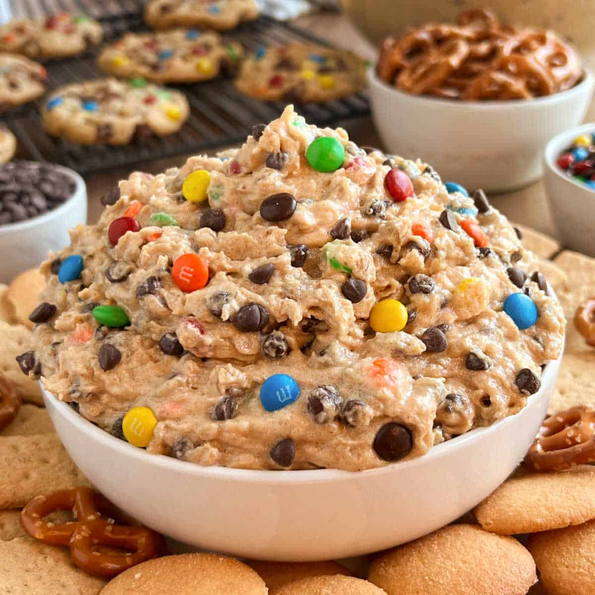

Delicious Dessert Ideas with Doughp Edible Cookie Dough
Welcome to our Recipe page, where we explore the delightful world of edible cookie dough! If you’re looking for easy dessert ideas with cookie dough, you’ve come to the right place. Doughp’s cookie dough is not only safe to eat but also incredibly versatile, making it the perfect ingredient for a variety of sweet treats. In this guide, we’ll share some simple recipes and tips on how to make edible cookie dough shine in your desserts.
Why Choose Doughp Edible Cookie Dough?
Doughp’s cookie dough is crafted with high-quality ingredients, ensuring that every bite is delicious and safe to enjoy raw. Our cookie dough is made without eggs and with heat-treated flour, so you can indulge without any worries. Whether you’re using it straight from the tub or incorporating it into recipes, Doughp cookie dough is a fantastic choice for dessert lovers.
How to Make Edible Cookie Dough
Before diving into our easy cookie dough recipes, let’s talk about how to make edible cookie dough using Doughp’s products. Here’s a quick guide:
- Choose Your Flavor: Doughp offers a variety of flavors, including chocolate chip, brownie batter, and snickerdoodle. Pick your favorite or mix and match!
- Scoop and Serve: For a simple treat, scoop the cookie dough straight from the tub and enjoy it as is. It’s perfect for snacking!
- Incorporate into Recipes: Use Doughp cookie dough as a base for other desserts. You can mix it into batters, use it as a topping, or bake it into cookies.
- Store Properly: If you have leftover cookie dough, store it in an airtight container in the fridge for up to two weeks or freeze it for longer storage.
Easy Dessert Ideas with Cookie Dough
1. Cookie Dough Ice Cream Sundae

Ingredients:
- 1 cup of your favorite ice cream
- 1/4 cup Doughp cookie dough (any flavor)
- Whipped cream
- Chocolate syrup
- Sprinkles (optional)
Instructions:
- Scoop the ice cream into a bowl.
- Add the cookie dough on top of the ice cream.
- Drizzle with chocolate syrup and top with whipped cream.
- Finish with sprinkles for a festive touch.
2. Cookie Dough Brownies
Ingredients:
- 1 box of brownie mix (plus ingredients required on the box)
- 1 cup Doughp cookie dough (chocolate chip works great)
- Optional: chocolate chips for extra fudginess
Instructions:
- Preheat your oven according to the brownie mix instructions.
- Prepare the brownie batter as directed on the box.
- Pour half of the brownie batter into a greased baking dish.
- Drop spoonfuls of Doughp cookie dough over the brownie batter.
- Pour the remaining brownie batter on top, spreading it evenly.
- If desired, sprinkle chocolate chips on top.
- Bake according to the package instructions, usually around 25-30 minutes.
- Let cool before cutting into squares.
3. Cookie Dough Stuffed Pancakes
Ingredients:
- 1 cup pancake mix (plus ingredients required on the box)
- 1/2 cup Doughp cookie dough
- Maple syrup for serving
Instructions:
- Prepare the pancake batter according to the pancake mix instructions.
- Heat a non-stick skillet over medium heat.
- Pour a small amount of pancake batter onto the skillet.
- Place a spoonful of Doughp cookie dough in the center of the pancake.
- Cover with more pancake batter to seal the cookie dough inside.
- Cook until bubbles form on the surface, then flip and cook until golden brown.
- Serve with maple syrup.
4. Cookie Dough Energy Bites
Ingredients:
- 1 cup Doughp cookie dough
- 1/2 cup oats
- 1/4 cup mini chocolate chips
- 1/4 cup nut butter (peanut or almond)
Instructions:
- In a mixing bowl, combine Doughp cookie dough, oats, mini chocolate chips, and nut butter.
- Mix until well combined.
- Roll the mixture into small balls and place them on a baking sheet.
- Refrigerate for at least 30 minutes to firm up.
5. Cookie Dough Dip
Ingredients:
- 1 cup Doughp cookie dough
- 1/2 cup cream cheese, softened
- 1/4 cup powdered sugar
- 1/2 teaspoon vanilla extract
- Graham crackers or fruit for dipping
Instructions:
- In a mixing bowl, beat the cream cheese until smooth.
- Add the Doughp cookie dough, powdered sugar, and vanilla extract. Mix until well combined.
- Serve with graham crackers or fresh fruit for dipping.
Tips for Using Doughp Cookie Dough in Recipes
Experiment with Flavors: Don’t be afraid to mix and match different Doughp flavors in your recipes. Chocolate chip cookie dough pairs well with brownie batter for a double chocolate treat!
Adjust Baking Times: If you’re baking with Doughp cookie dough, keep an eye on your treats. Since our cookie dough is safe to eat raw, you can adjust baking times to achieve your desired texture.
Chill for Better Texture: If you’re using cookie dough in no-bake recipes, chilling it in the fridge for a bit can help it firm up and make it easier to work with.
Get Creative: Use Doughp cookie dough as a topping for desserts like cupcakes, cheesecakes, or even as a filling for pastries. The possibilities are endless!
Join Us on Our Journey
As we continue to grow, we invite you to join us on this delicious journey. Whether you’re a longtime fan or trying Doughp for the first time, we’re excited to share our cookie dough with you. Follow us on social media to stay updated on new flavors, promotions, and community initiatives.
Thank you for being a part of the Doughp family. Together, we can spread joy, one scoop at a time!